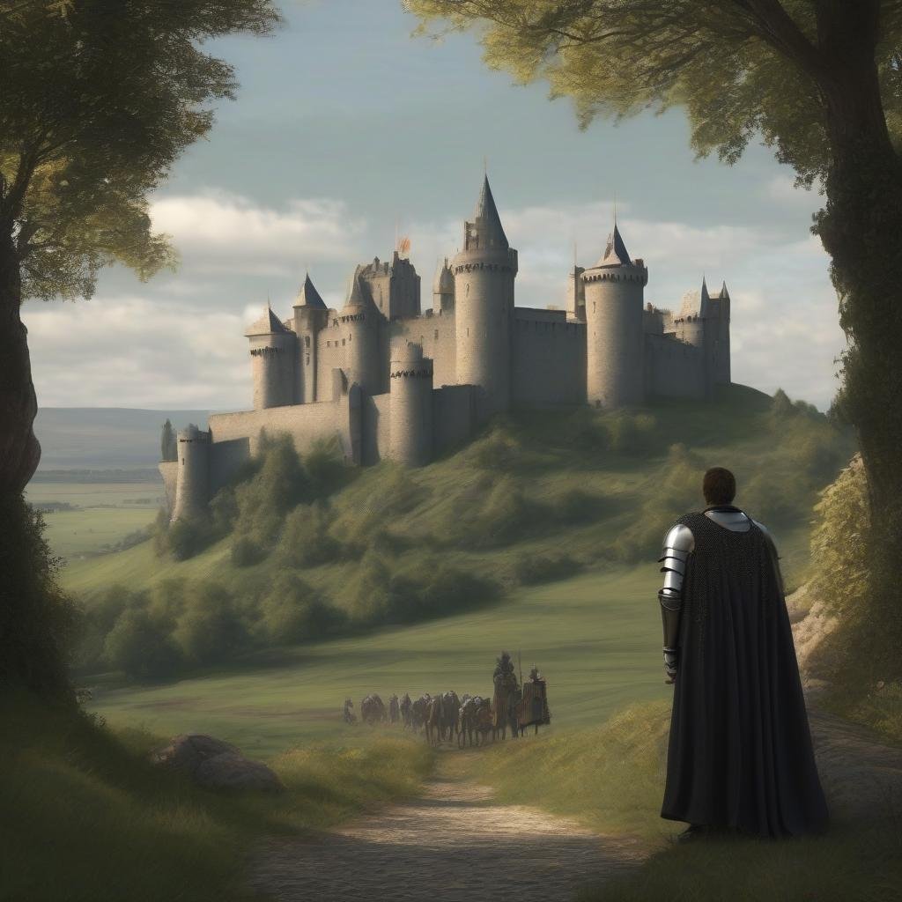
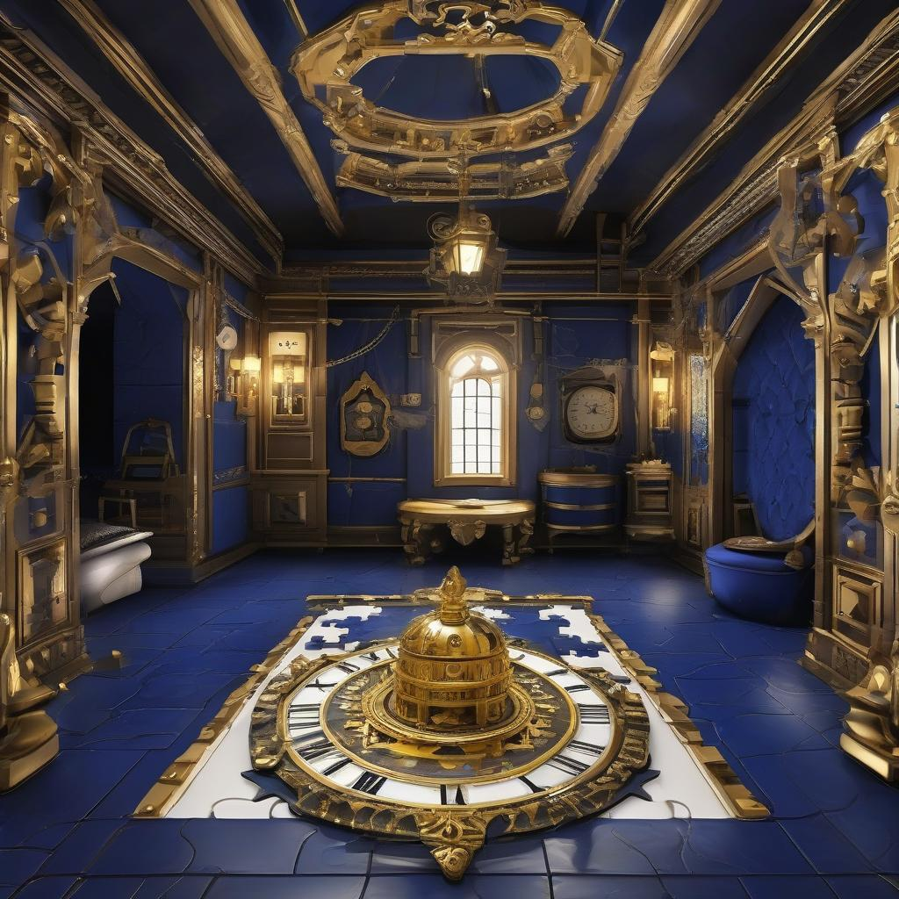

ChronoQuest: The Lost Timepieces
Act 3: The Medieval Kingdom

With the first Timepiece secured, you are flung through the vortex of time, landing in a medieval kingdom shrouded in mystery. The Timepiece here is protected by a powerful monarch, hidden away within the towering walls of a grand castle. The echoes of steel clash in the distance as knights patrol the grounds, ever vigilant.
To retrieve this Timepiece, you must first gain entry to the castle. The king, wise but secretive, has hidden the key behind an ancient riddle. Only those worthy of solving it may pass through the gates. The Timepiece awaits within the king’s chamber, guarded by both royal decree and legend. Solve the riddle, navigate the castle’s defenses, and take your place in history.
